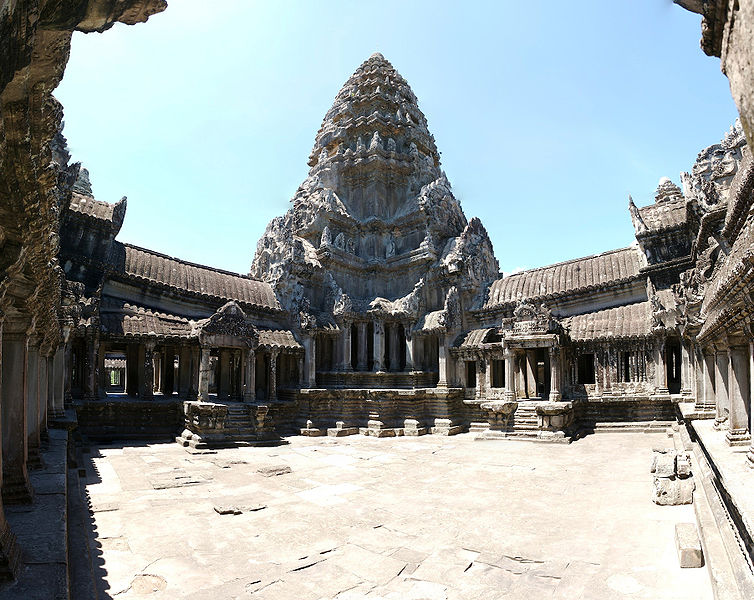

Angkor Wat Историја
Целиот Angkor период се протега повеќе од шест векови, или поточно од IX до XV век. За време на овој преиод Khmer империјата го достигнува својот макксимален раскош како едно од најмоќните царства во југоисточна Азија. Во овој период целата површина на Angkor била во изградба. Jayavarman II се смета за човекот кој го започнал сето тоа. Тој самиот се прогласува за Devaraja (добар крал) и ја основа Khmer империјата (империјата на црвените) во 802.
 По него кралот Indravarman кој се смета за окупатор, се памети по тоа што започнал да го гради Baray, комплекс систем за наводнување, да снабди вода во областа на Angkor. Тој исто така започнал да ги гради Bakong и Preah Ko храмовите. Неговиот син Yasovarman постигна повеќе од проектот на неговиот татко: тој ги изградил Phnom Bakheng и Lolei храмовите, и со него Angkor стана новиот главен град на кралството. Овие два крала понатаму го прошириле системот Baray исто така.
Тогаш главниот град бил преместен во Koh Ker за кратко време, во владеењето на Jayavarman IV, но по само 14 години Angkor повторно стана главен град во времето на Rajendravarman II. Неговиот син Jayavarman V застанал на местото на големиот крал и со него целата империја се проширила до најголем степен. Два прекрасни храмови, како Banteay Srei и Ta Keo биле изградени. По него, Udayaditavarman II ја изградил пирамидата Baphuon и западниот Mebon, и овде e самиот врв на Khmer цивилизацијата(цивилизацијата на црвените). Два големи крала оставиле отпечатоци засекогаш во историјата на оваа планета, а тоа се Suryavarman II и Jayavarman II.
Првиот крал го изградил Bang Melea, кој исто така го изградил и Angkor Wat. Следниот крал ги изградил Preach Khan, Ta Phrom и Angkor Thom. Како што можете да видите со свои очи овие два храма се последните траги од големата цивилизација, со необичен вкус за уметност.Огромна работа која вклучувала не само голема армија од илјадници работници, кои работеле тешка работа како градење, пренесување карпи итн. Паралелно имало и армија од илјадници артисти и артистки. Angkor Wat е дел од нив. Ние никогаш нема да ги дознаеме нивните имиња или лица, но тоа што го оставиле ги исполнува нашите срца со необична магија. Ѕидовите на Angkor говорат за нивните животи, обичаи и нивната заработувачка. Angkor не бил само религиозно место, туку и место на живеење на повеќе од милион луѓе.